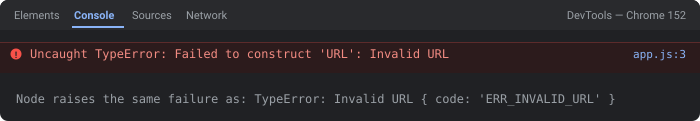

Quick answer
The string passed to new URL(...) isn't a complete, valid absolute URL — usually a relative path with no base, a missing protocol, or genuinely malformed input. Fix it with the two-argument form new URL(path, base) for relative paths, or wrap construction in try/catch when the string comes from user input.
The exact error string
new URL("/api/users");
// Uncaught TypeError: Failed to construct 'URL': Invalid URL
new URL("example.com");
// Uncaught TypeError: Failed to construct 'URL': Invalid URL
// -> no protocol, so this isn't a recognizable absolute URLWhat it actually looks like

TypeError: Invalid URL with code: 'ERR_INVALID_URL' and no Failed to construct prefix. Same bug, two search strings.Why this throws instead of returning something empty
Unlike most JavaScript string handling, the URL constructor validates its input against the URL spec immediately and synchronously — there's no "empty URL" fallback the way Number("abc") gives you NaN. If the input isn't a parseable absolute URL (and no base was given to resolve a relative one against), it throws right there, which is exactly why this needs a try/catch around any URL coming from outside your control.
Cause 1: a relative path with no base
new URL("/api/users");
// ❌ relative path — no scheme, no host
new URL("/api/users", "https://example.com"); // ✅ two-argument form
// -> https://example.com/api/users
new URL("/api/users", window.location.origin); // ✅ resolve against the current page
Cause 2: a missing protocol
new URL("example.com");
// ❌ looks like a bare hostname, not a full URL
new URL("https://example.com"); // ✅ explicit protocol
// or detect and normalize user-typed input:
function toAbsoluteUrl(input) {
return /^https?:\/\//i.test(input) ? input : "https://" + input;
}
new URL(toAbsoluteUrl("example.com")); // ✅Cause 3: unvalidated user input
function isValidUrl(value) {
try {
new URL(value);
return true;
} catch {
return false; // ✅ bad input is expected, not exceptional — handle it, don't crash
}
}
if (isValidUrl(userInput)) {
const url = new URL(userInput);
// ... use it
} else {
showError("Please enter a valid URL, including https://");
}Cause 4: a broken template literal
const base = "https://api.example.com"; // no trailing slash
const path = "users";
new URL(`${base}/${path}`); // ✅ https://api.example.com/users
const endpoint = undefined;
new URL(`${base}/${endpoint}`);
// ❌ builds "https://api.example.com/undefined" — technically parses,
// but is not the URL you meant; log the built string to catch thisThe same failure, two different messages
The wording in the heading of this page is browser-specific. The Failed to construct 'URL': prefix comes from the WebIDL layer that wraps constructors in the browser, and Node has no such layer — so identical code produces a visibly different string depending on where it runs:
// Chrome 152 (and any Chromium browser)
Uncaught TypeError: Failed to construct 'URL': Invalid URL
// Node.js v24.15.0 — same bug, different text, plus a machine-readable code
TypeError: Invalid URL
at new URL (node:internal/url:825:25) {
code: 'ERR_INVALID_URL',
input: '/api/users'
}Two practical consequences. First, if you searched one form and found nothing useful, search the other. Second, Node's version is strictly more helpful for debugging: it attaches code: 'ERR_INVALID_URL' (stable across versions, so safe to branch on) and an input property containing the exact string that failed — which is the one thing the browser message never tells you.
try {
new URL(value);
} catch (err) {
if (err.code === "ERR_INVALID_URL") {
console.error("bad URL:", err.input); // ✅ Node prints the offending string
}
throw err;
}Check without throwing: URL.canParse() and URL.parse()
The try/catch in Cause 3 above is no longer the only option. Two static methods now answer the same question without using exceptions for control flow:
URL.canParse("/api/users"); // false — returns a boolean, never throws
URL.canParse("/api/users", "https://api.example.com"); // true — base makes it resolvable
URL.parse("/api/users"); // null instead of throwing
const url = URL.parse(userInput, base);
if (url === null) {
showError("Please enter a valid URL, including https://");
} else {
fetch(url); // ✅ already a URL object
}Both take the same (input, base) arguments as the constructor. URL.canParse() landed in Chrome 120, Firefox 115, Safari 17 and Node 19.9; the static URL.parse() is newer — Chrome 126, Firefox 126, Safari 18 and Node 22.1. Prefer URL.parse() where your baseline allows it: canParse() followed by new URL() parses the string twice, while parse() validates and gives you the object in one pass. If you must support older targets, keep the try/catch.
The base argument: a trailing slash changes the answer
Once you start passing a base URL to fix Cause 1, a subtler bug replaces the original one. The base is resolved using the normal relative-URL rules, which means the last path segment of the base is discarded unless the base ends in a slash:
new URL("users", "https://api.example.com/v1/").href
// ✅ "https://api.example.com/v1/users" — base ends in "/", v1 is a directory
new URL("users", "https://api.example.com/v1").href
// ❌ "https://api.example.com/users" — no slash, so "v1" is replaced
new URL("/users", "https://api.example.com/v1/").href
// ❌ "https://api.example.com/users" — a leading "/" ignores the base path entirelyAll three of these parse successfully, so nothing throws — you get a 404 from your API instead, which is a much longer debugging session than an exception would have been. Verified identically on Chrome 152 and Node v24.15.0. The rule worth memorising: base paths end in a slash, relative paths do not begin with one. When a request 404s just after you added a base URL, log url.href before the fetch and this will be visible immediately.
Common variants at a glance
| Input | Why it fails | Fix |
|---|---|---|
/path | relative, no base | new URL(path, base) |
example.com | no protocol | prepend https:// |
| arbitrary user text | not a URL at all | try/catch or validate first |
${base}${path} | missing separator / undefined variable | log the built string before constructing |
| empty string | nothing to parse | check for empty before constructing |
Debugging checklist
- ✓ Log the exact string right before
new URL(...)runs - ✓ Relative path? Add the base as the second argument
- ✓ No
http(s)://? Add it before constructing - ✓ Value comes from a user or external source? Wrap in
try/catch - ✓ Built with a template literal? Confirm no piece is
undefinedand separators are correct
Frequently Asked Questions
What does 'Failed to construct URL: Invalid URL' mean?
The string you passed to new URL(...) is not a valid absolute URL, and no second base-URL argument was given to resolve it against. Unlike most string operations, the URL constructor validates its input immediately and throws synchronously if it can't parse a complete URL from what it was given.
Why does a relative path throw this?
new URL('/api/users') fails because a relative path has no scheme or host — the constructor needs a full, absolute URL unless you also provide a base as the second argument: new URL('/api/users', 'https://example.com'). The two-argument form is exactly how the browser resolves relative links against a page's own URL.
Why does a missing protocol cause this?
new URL('example.com') throws because without http:// or https://, the string looks like a relative path (or an opaque scheme-less value), not an absolute URL. Prepend the protocol explicitly, or detect and add it before constructing: value.startsWith('http') ? value : 'https://' + value.
Why does user input break this?
A text field where users type a URL will inevitably get malformed input — spaces, missing protocol, extra characters, or a value that isn't a URL at all. Never call new URL(userInput) unguarded; wrap it in try/catch or validate the string first, since a bad value is expected user behavior, not an exceptional case.
Why does a template literal produce an invalid URL?
A common bug is an unresolved template variable or a missing separator: new URL(`${base}${path}`) can produce something like 'https://api.example.compath' if base doesn't end in a slash, or embed "undefined" if a variable wasn't set. Log the built string before passing it to new URL to catch this.
How do I validate a URL without throwing?
Wrap the construction in try/catch and treat a thrown error as "not a valid URL" rather than letting it crash the page: function isValidUrl(s) { try { new URL(s); return true; } catch { return false; } }. This is the standard, spec-correct way to validate a URL string in JavaScript.
References
- URL() constructor (MDN)
- URL Standard (WHATWG)
Building or decoding URLs?
Encode/decode query strings and URL components entirely in your browser — nothing is uploaded to a server.